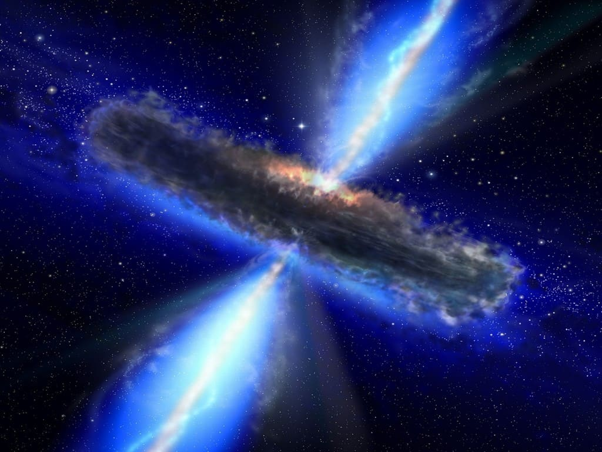
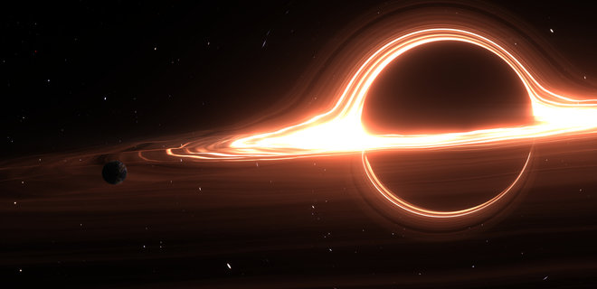

Словарь терминов 🚀
- Квазар — класс астрономических объектов, являющихся одними из самых ярких (в абсолютном исчислении) в видимой Вселенной.
Английский термин quasar образован от слов quasi-stellar («квазизвёздный» или «похожий на звезду») и radiosource («радиоисточник»)
и дословно означает «похожий на звезду радиоисточник».
По современным представлениям, квазары представляют собой активные ядра галактик на начальном этапе развития, в которых сверхмассивная
чёрная дыра поглощает окружающее вещество, формируя аккреционный диск. Он и является источником излучения,
исключительно мощного (иногда в десятки и сотни раз превышающего суммарную мощность всех звёзд таких галактик, как наша)
и имеющего помимо космологического гравитационное красное смещение, предсказанное А. Эйнштейном в общей теории относительности (ОТО).

- Чёрная дыра — область пространства-времени, гравитационное притяжение которой настолько велико, что покинуть её не могут даже
объекты, движущиеся со скоростью света, в том числе кванты самого света. Граница этой области называется горизонтом событий,
а её характерный размер — гравитационным радиусом. В простейшем случае сферически симметричной чёрной дыры он равен радиусу Шварцшильда.
Теоретически возможность существования таких областей пространства-времени следует из некоторых точных решений уравнений Эйнштейна, первое из которых
было получено Карлом Шварцшильдом в 1915 году. Изобретатель термина достоверно не известен, но само обозначение было популяризовано
Джоном Арчибальдом Уилером и впервые публично употреблено в популярной лекции «Наша Вселенная: известное и неизвестное»
(англ. Our Universe: the Known and Unknown) 29 декабря 1967 года. Ранее подобные астрофизические объекты называли
«сколлапсировавшие звёзды» или «коллапсары» (от англ. collapsed stars), а также «застывшие звёзды» (англ. frozen stars).

Несколько интересных вопросов!